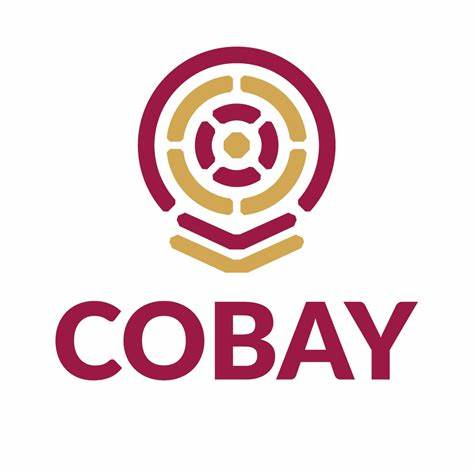
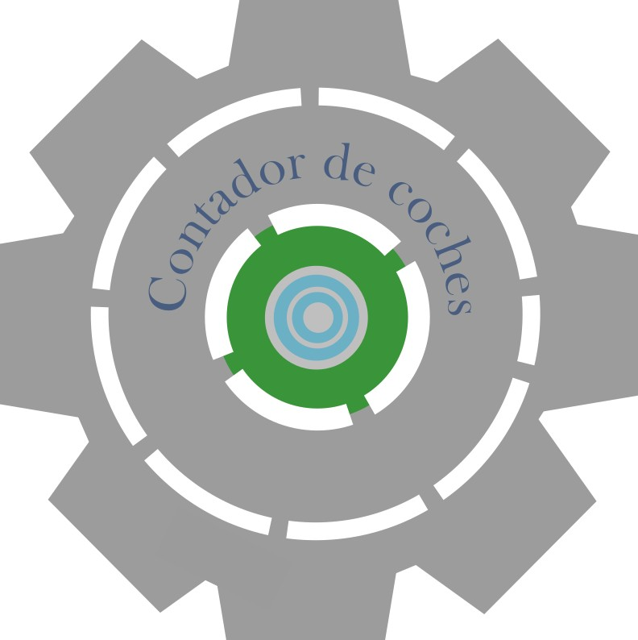

¡Bienvenidos a nuestra página! Somos estudiantes del COBAY plantel Chenku de la capacitación en Tecnologías de la Información y Comunicación, formando parte de la fundación Cuantrix.
Aquí van a encontrar información de nuestro proyecto, un contador de coches.

